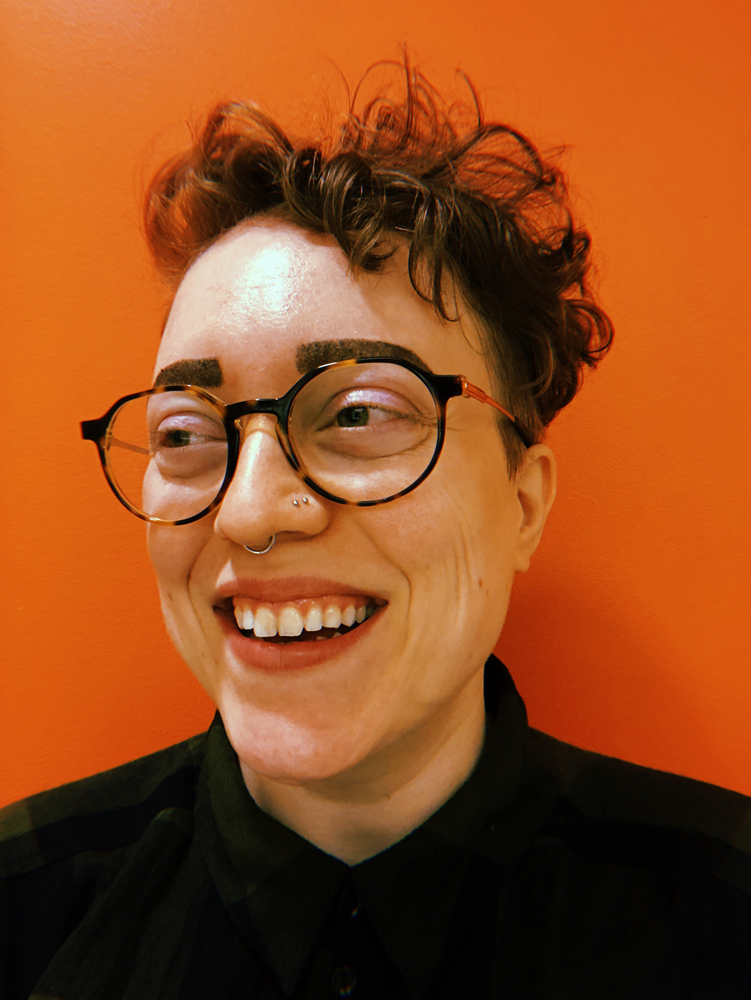

11:20am Room A - Panel on Data Ethics
Dr. Hong Cui |

|
|
|
Professor School of Information University of Arizona |
||
| Website | ||
| Hong Cui’s research focuses on machine learning applications for semantic annotation of semi-structured information, with a current focus on biodiversity literature. She develops and evaluates machine learning and natural language processing algorithms for converting born-digital and digitized taxonomic descriptions into new Semantic Web formats. More recently her research has led to ontology building in biology domain. Her work has an explicit impact on how scientific information can be retrieved and used in the digital era by turning the wealth of human-readable scientific information into something that can be understood and read by computers. She is the principal investigator or co-PI of a number of National Science Foundation-funded projects. The methodology developed by Dr. Cui has been adopted by several other research groups in the US and abroad. She leads the biosemantics research group in the iSchool. | ||
Dr. Natasha Warner |

|
|
|
Professor and Head Deptartment of Linguistics University of Arizona |
||
| Website | ||
|
I study the messy way people talk when they’re talking fast in casual conversation, where they leave out a lot of the sounds and even whole words. For example, in one of my group’s recordings, a speaker pronounced “gonna hafta” with just two syllables (sort of ” got.tuh”), and in another, a different speaker pronounced “do you have time” as two syllables with no trace of the word “have” at all. Another speaker pronounced “Friday night” as one syllable, something like “freh…” stretched out in time. And yet these fast, “sloppy” pronunciations sound fine if you hear them in context, and are not hard to understand if you’re hearing your native language. What’s amazing is that this is actually how we communicate information. I also work with the Mutsun community of California, a Native American community from near San Juan Bautista CA, to try to help them learn their heritage language (Mutsun) and teach it in their community. The last person who learned Mutsun fluently as a child passed away in 1930, but there are a lot of written records of the language |
||
Dr. Sonja Lanehart |
||
|
Professor Department of Linguistics Teaching, Learning, and Sociocultural Studies Faculty Fellow, Graduate College University of Arizona |
@sonjalanehart | |
| Website | ||
| Sonja Lanehart is Professor of Linguistics, Teaching, Learning, and Sociocultural Studies, and Africana Studies as well as a Faculty Fellow in the Graduate College at the University of Arizona. Her scholarship focuses on language, literacy, and education in African American communities; language and identity; sociolinguistics; and Black education from Black Feminisms, Critical Race Theory, and Intersectionality perspectives. She is particularly interested in African American Women’s Language and pushing the boundaries of research in sociolinguistics and language variation to be anti-racist, inclusive, diverse, and equitable in the fight for social and linguistic justice. Her publications include Sista, Speak! Black Women Kinfolk Talk about Language and Literacy (2002), African American Women’s Language: Discourse, Education, and Identity (ed., 2009), and The Oxford Handbook of African American Language (ed., 2015). | ||
Moderator: Elliot Truslow |
 | |
|
PhD Student School of Sociology University of Arizona |
@ohheyitselliot | |
| Website | ||
| Elliot Truslow is a PhD student at the University of Arizona School of Sociology. They study data justice, technology, surveillance, information, and law and society. Elliot is currently working on a project related to predictive policing in Chicago and another related to Smart Border technology and biometric surveillance. Prior to graduate school, they led delivery and implementation for the current iteration of HealthCare.Gov and worked as a business and systems analyst in the insurance industry. | ||